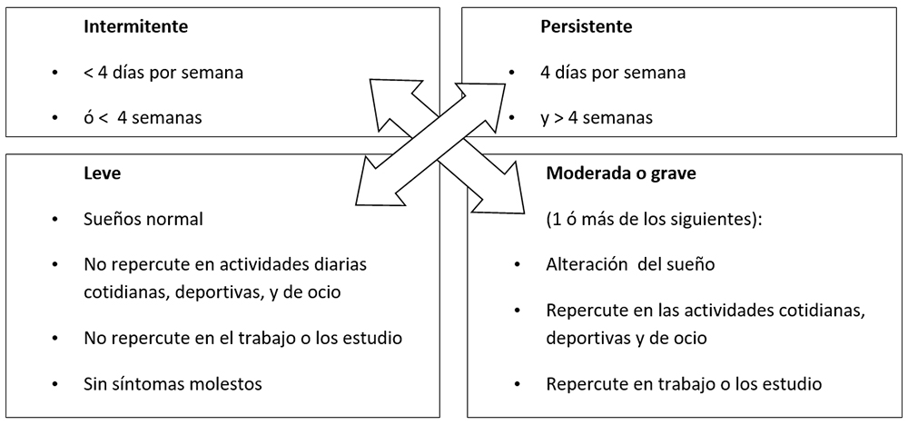
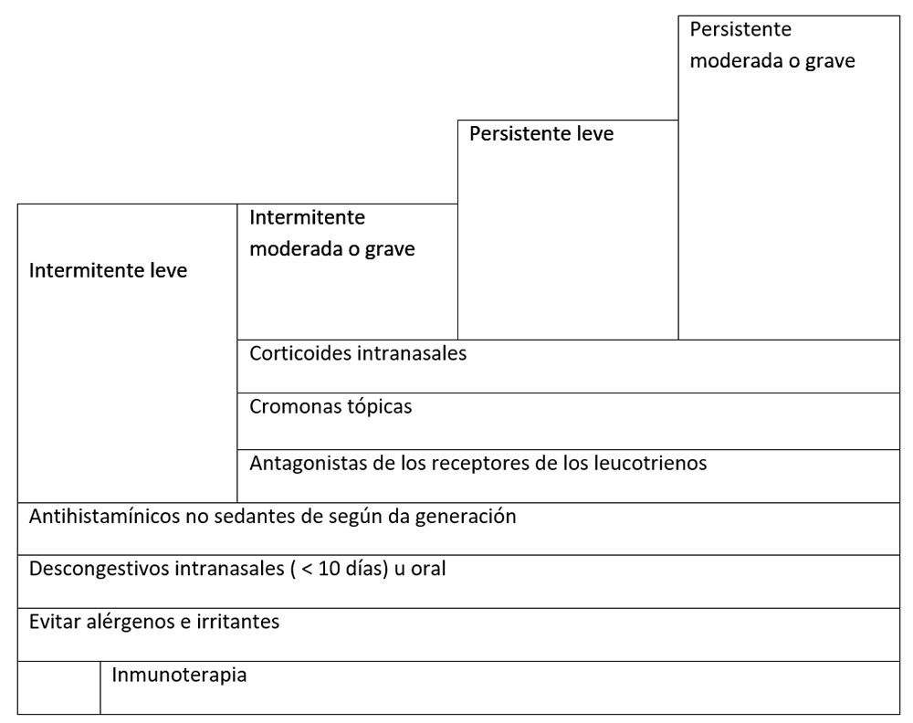

<div class="pages">
  <div data-page="projects" class="page no-toolbar no-navbar">
    <div class="page-content">
    
     <div class="navbarpages">
       <div class="navbar_home_link"><a href="toogle.html"></a></div>
       <div class="navbar_page_center"><b>Especialidades</b></div>
       <div class="menu_open_icon_white"><a href="#" class="open-panel"></a></div>
     </div>
     <div id="pages_maincontent">

          <h2 class="page_subtitle">Rinítis alérgica</h2>
          <p><b>Autor/a:</b> Rocío Candón Morillo, Alergología, Hospital La Mancha-Centro, Alcázar de San Juan (C. Real)</p>
          <div class="page_single">         
              <div class="buttons-row">
                    <a href="#tab3" class="tab-link active button">Información</a>
                    <a href="#tab4" class="tab-link button">Clasificaci&oacute;n</a>
              </div>
              <div class="separadormenu_div"></div>
              <div class="buttons-row">
                    <a href="#tab5" class="tab-link button">Clínica</a>
                    <a href="#tab6" class="tab-link button">Tratamiento</a>
              </div>
              
              <div class="tabs-simple">
                    <div class="tabs">
                          <div id="tab3" class="tab active">
                          		<br />
                                <h4>Información</h4>
                                <p class="nojustify">
                                Enfermedad inflamatoria mediada por IgE, caracterizada por congestión nasal, rinorrea, estornudos y/o prurito nasa y causada por alérgenos: <br /><br />
                                &nbsp;&nbsp;&nbsp;&nbsp;&nbsp;&bull;&nbsp;<b>De interior:</b> ácaros, epitelios, insectos, hongos<br />
                                &nbsp;&nbsp;&nbsp;&nbsp;&nbsp;&bull;&nbsp;<b>De exterior:</b> pólenes y mohos <br />
                                &nbsp;&nbsp;&nbsp;&nbsp;&nbsp;&bull;&nbsp;<b>Ocupacionales:</b> sanitarios (látex), panaderos, carpinteros (maderas), construcción (cemento)

                                </p>
                          </div>
                          
    						<div id="tab4" class="tab">
                          		<br />
                                <h4>Clasificaci&oacute;n</h4>
                                <p class="justify">
                                	ARIA (Allergic Rhinitis and its Impact on Asthma) <br /><br />
                                    
                                </p>
                          </div>
                          <div id="tab5" class="tab">
                          		<br />
                                <h4>Clínica</h4>
                                <p class="nojustify">
                                    Rinorrea, estornudos prurito nasal, congestión y drenaje retronasal
                                </p>
                          </div> 
                          
                          <div id="tab6" class="tab">
                          		<br />
                                <h4>Tratamiento</h4>
                                <p class="nojustify">
                                	(Modificado de la  guía ARIA) <br />
                                    
                                </p>
                          </div> 
                    </div>
              </div>        
          </div>     
      </div>  
    </div>
  </div>
</div>